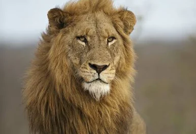
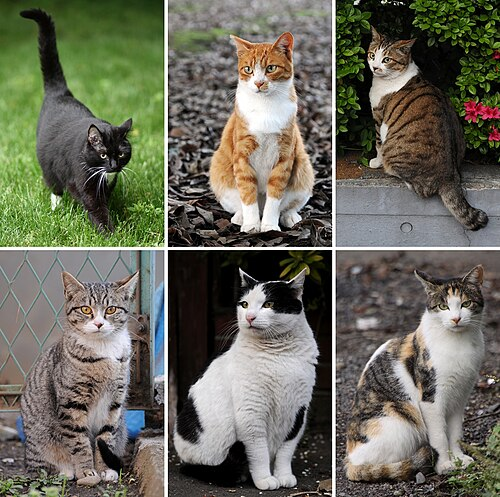

האריה (שם מדעי: Panthera leo) הוא מין של טורף מהסוג פנתרה ממשפחת החתוליים, והוא שני בגודלו בין בני הסוג דמויי החתוליים אחרי הטיגריס. האריה חי בעיקר באפריקה שמדרום לסהרה.
המאפיין הבולט ביותר של הפילים הוא החדק, שבעזרתו הם שותים, אוכלים ומתרחצים. מפיהם בולטים שני חטי שנהב, שהפכו אותם למטרה לציד רב שהביא לפגיעה קשה בהם.

קופים הוא שם עממי לאוסף מיני בעלי חיים מסדרת הפרימטים, אשר במובן המדעי כולל את תת-הסדרה קופים רחבי-אף ואת המשפחה קופים בעלי זנב, אך אינו כולל את קופי האדם ואת האדם עצמו, אף שהם קרובים אבולוציונית.

חתול הבית (שם מדעי: Felis silvestris catus) הוא מין מבוית של יונק מסדרת הטורפים, ממשפחת החתוליים מהסוג חתול.
כלב הוא שמו היום-יומי של כלב הבית (שם מדעי: Canis lupus familiaris), תת-מין של הזאב המצוי (Canis lupus), ממשפחת הכלביים, מסדרת היונקים הטורפים.